Azure DevOps目前仍只在微软云Azure海外区域提供SaaS服务，Azure中国区域还没有发布。其实Azure DevOps可以管理各种云和应用部署的环境与平台，可以通过服务连接（Service Connection） 方便地连接Azure中国区域，以及其它Azure的特殊区域，比如美国政务云、德国区域等等。本文将带领大家一步一步配置好中国区域的订阅，以及建立起Azure DevOps到中国区域订阅的连接。
配置Azure中国区域
Azure DevOps的服务连接支持多种连接方式，包括Azure Resource Manager, Azure Service Bus, Bitbucket Cloud, Kubernetes, Jenkins等。其中Azure Resource Manager需要对接一个Azure订阅中的Azure Active Directory (Azure AD) 应用程序和服务主体（service principal）。所以我们先来在Azure中国区域的控制台创建一个可以管理资源的 Azure AD 服务主体。
确认Azure AD 用户权限
要创建Azure AD 服务主体，必须具有足够的权限向 Azure AD 租户注册应用程序，并向应用程序分配 Azure 订阅中的角色。先来确认 Azure AD用户的权限。在服务列表中点击Azure Active Directory，会前进到如下的用户概况页。
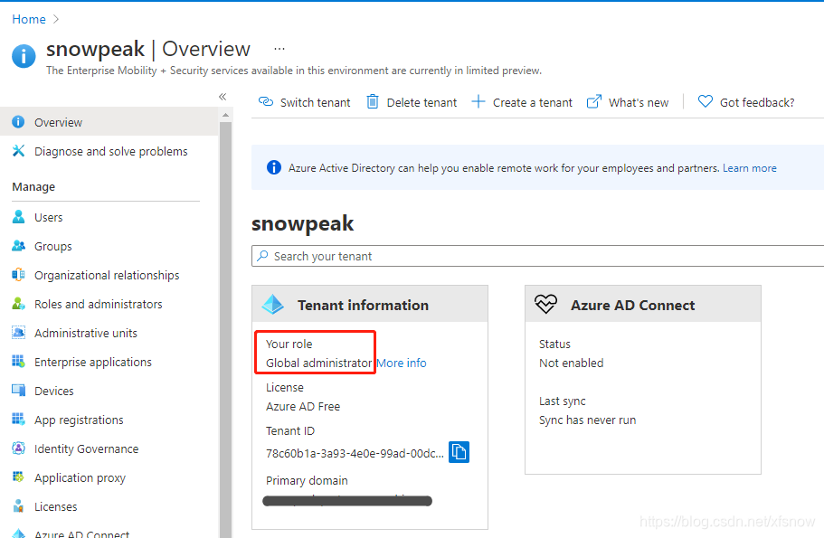
我这个测试用户现在是全局管理员，默认情况下普通用户不能注册应用程序。如果需要普通用户也可以注册应用程序，可以在左侧导航链接点击 User Settings，把用户可以注册应用程序设置为启用。
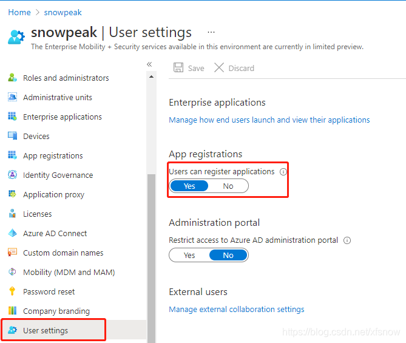
确认Azure 订阅权限
咱们要创建的服务主体是用来创建其它Azure资源的，所以需要我们的账户有Microsoft.Authorization/*/Write 访问权限才能将角色分配给 AD 应用。如果当前账户是所有者角色或用户访问管理员角色，权限就够了。
在控制台选择订阅，选到要创建服务主体的订阅，然后在左侧导航链接点“我的权限”。可以看到我这个账户当前的角色是管理员。
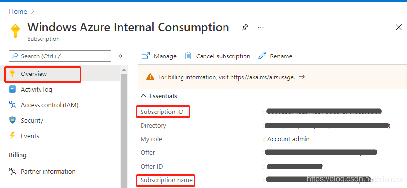
创建Azure AD 服务主体
在控制台回到 Azure Active Directory，左侧导航链接选择应用注册，再点新注册。
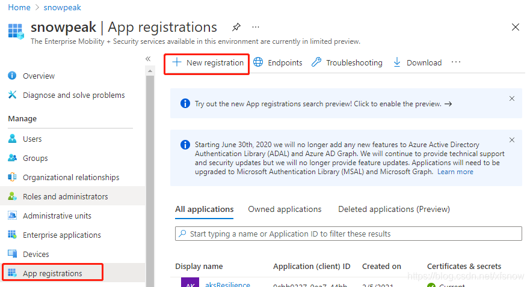
为应用程序起个名字，比如“Azure-DevOps”，并记下这个名字，后面还会用到。
支持的帐户类型，选择Accounts in this organizational directory only，其它保持默认。
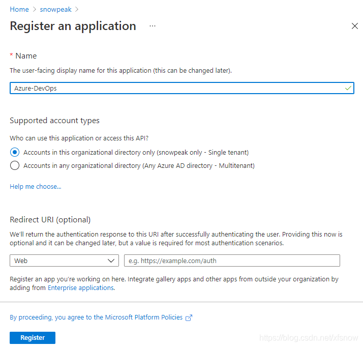
最后点击 Register 完成注册。
给服务主体添加身份验证
为配合下一步Azure DevOps创建服务连接时的验证，我们给刚刚创建出的服务主体添加身份验证。这里我们选用应用程序机密的方式。
在Azure AD 中的“应用注册”，选择刚创建出的应用程序。在左侧导航链接中选择“证书和机密”。然后在主窗格中点击“新建客户端机密”。
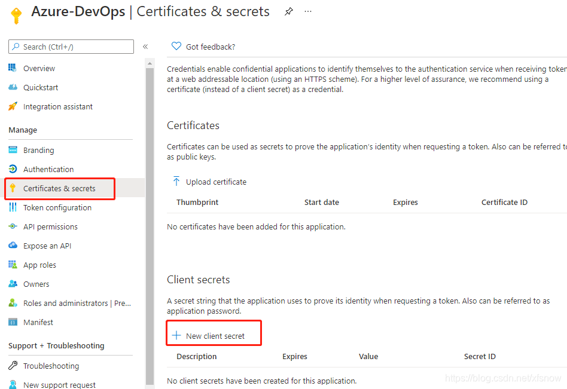
在弹出的浮层填写描述，失效期保持默认6个月，最后点击底部添加按钮即可。添加成功后，会显示刚才添加的那条记录。
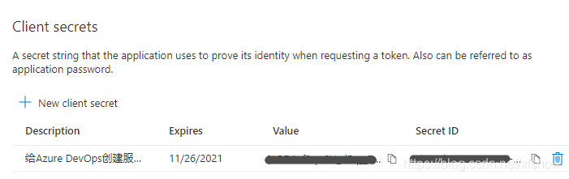
这里注意我们把 Value 的值复制保存出来，只有这一次机会，以后就不能复制了。Secret ID 是随时可以复制的。
给应用程序分配订阅的角色
再来到控制台的订阅管理界面，选择到咱们正在操作的这个订阅，然后点击左侧导航链接中的“访问控制(IAM)”，点击主窗格中的“添加”，再点击添加角色分配。
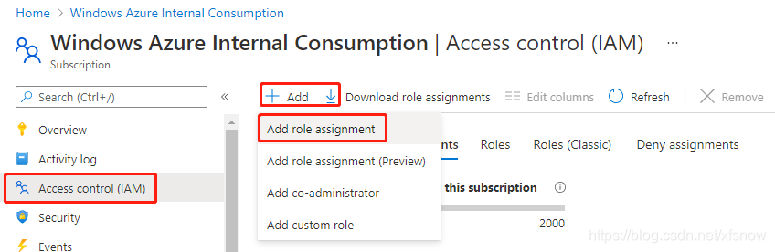
在弹出的添加角色分配浮层中，角色选Contributor，分配权限选择User, group or service principal。
在选择格，输入前面创建的应用程序名，会搜索出来一个结果，要再点击一下这条结果，然后底下左边的保存按钮就变成可用了。
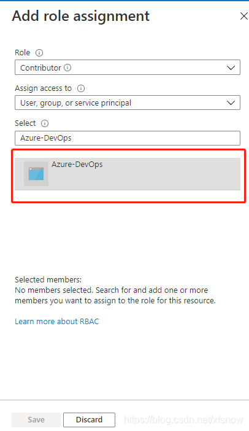
最后点击保存，成功后会回到分配角色这个列表，已经显示出来刚刚分配的角色，表示操作成功。
配置Azure DevOps服务连接
创建Azure DevOps服务连接
登录Azure DevOps控制台，进入我们的项目，左下角Project settings进入项目配置。点击 Pipelines下的Service connections，再点右上角的New service connection。第1步，点选Azure Resource Manager。
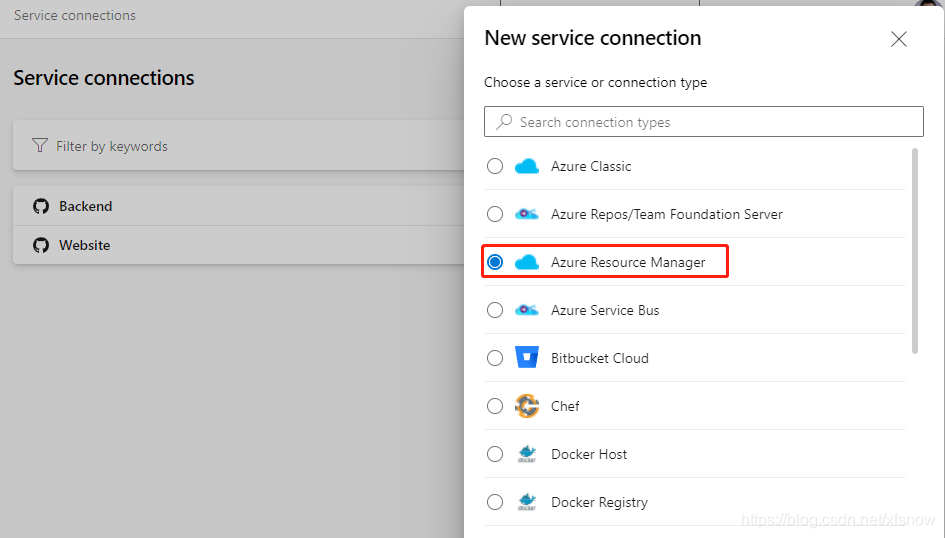
下一步，点选Service principal (manual)。
这一页的Environment选择 Azure China Cloud。
Scope Level 选Subscription。
Subscription Id 和 Subscription Name 要回到订阅的概览页，从主窗格相应项目复制过来。

Service Principal Id，去到Azure中国控制台的订阅中，点开我们刚刚注册的应用，在其概览页找到Application (client) ID。

Service principal key的值，填写前面我们复制保存出来的客户端机密中的Value值。
Tenant ID 的值，取自上面界面的Directory (tenant) ID。这5格填写好后，Verify按钮变为可用，我们点击一下，顺利的话，会显示出如下的验证成功。如果报错，请返回重新检查各个ID和机密的值是否都填写到正确的格里。
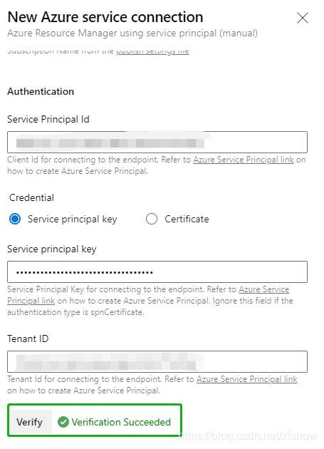
最后我们在Service connection name和Description (optional) 中填写上有意义的名字比如“Azure China”和详细描述，点击右下角的Verify and save 就完成了。
使用Azure DevOps的发布流水线验证服务连接
在Azure DevOps控制台 Pipelines 下的 Releases，右边主窗格点击中间位置的New 按钮，再点击New release pipeline。
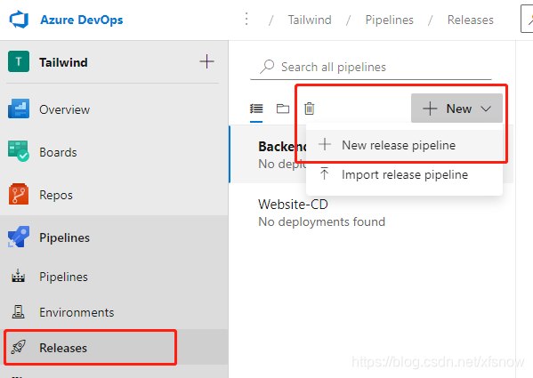
在弹出的选择模板浮层，点击第1个Azure App Service deployment。
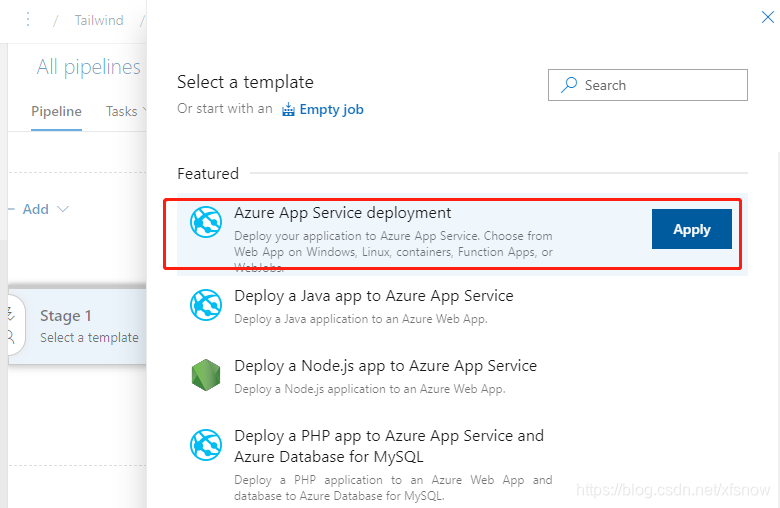
在接下来的浮层中，点击左边的“1 job, 1 task”链接。
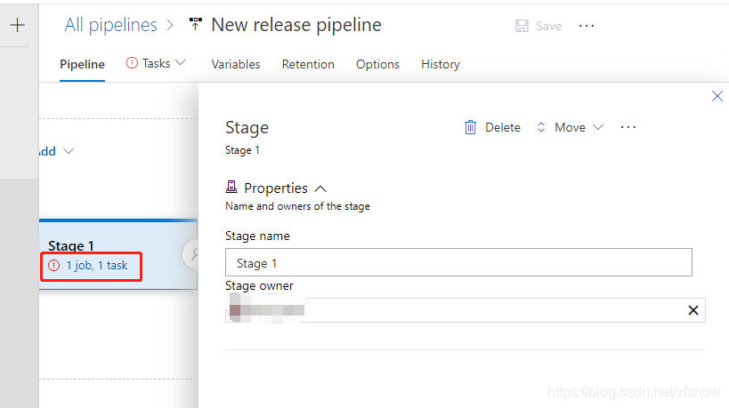
在接下来的浮层中，Azure subscription 选项下展开菜单。
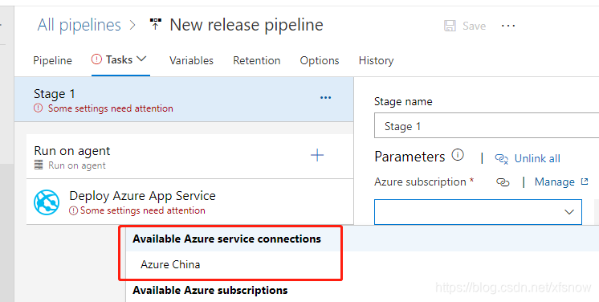
可以看到我们刚才创建的服务连接已经显示在这里了，表示这个服务连接完全创建成功。后续有其它的发布流水线，都可以选用这个服务连接，并且按提示再选择具体的资源目标了。